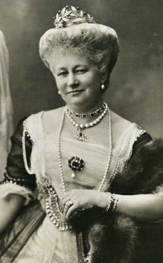

Przemków (łac. Primislaw, niem. Primkenau) – miasto w województwie dolnośląskim, w powiecie polkowickim, siedziba gminy miejsko-wiejskiej Przemków. Położone jest na północnym krańcu Borów Dolnośląskich, przy drodze krajowej nr 12. Według danych GUS z 31 grudnia 2019 r. miasto liczyło 6091 mieszkańców. W 1954 r. utworzono gromadę Przemków, ale zanim zaczęła funkcjonować, przekształcono ją w osiedle, któremu 1 stycznia 1959 nadano status miasta. W latach 1954-1972 Przemków był siedzibą władz gromady Przemków, do której nie należał. 1 stycznia 1973, uchwałą Wojewódzkiej Rady Narodowej w Zielonej Górze, utworzono na nowo gminę Przemków. W latach 1975–1998 miasto administracyjnie należało do woj. legnickiego. W miejscowości działało Państwowe Gospodarstwo Rybackie „Przemków”
Rodzina Augusty Wiktorii Fryderyki Ludwika Feodora Jenny, niem. Auguste Viktoria Friederike Luise Feodora Jenny von Schleswig-Holstein-Sonderburg-Augustenburg pochodzi z Przemkowa? To tutaj Królowa Prus i Cesarzowa Niemiec poznała swojego męża, Wilhelma II Hohenzollerna